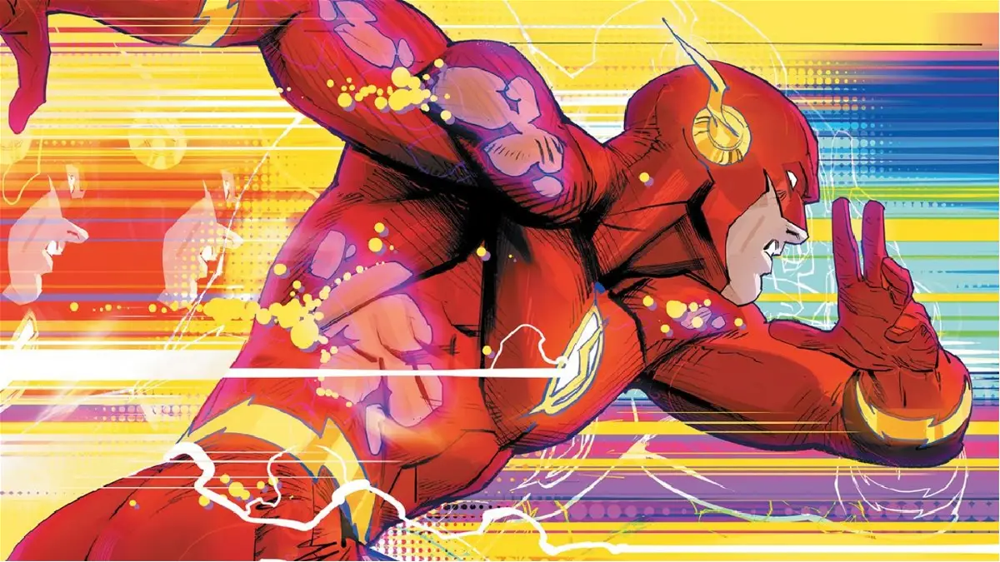
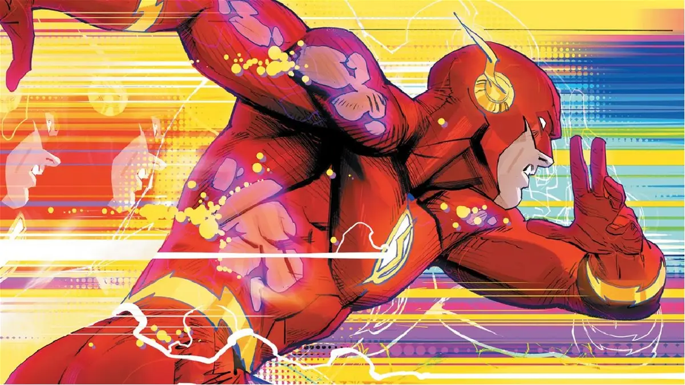

The Flash
The fastest man alive
Bartholomew Henry "Barry" Allen es un científico asistente de la División de Ciencia Criminal y Forense en Central City Police Department (CCPD)
The fastest man alive
Bartholomew Henry "Barry" Allen es un científico asistente de la División de Ciencia Criminal y Forense en Central City Police Department (CCPD)
Personaje de Star Wars, Villano principal en "La amenaza fantasma" (EP1.)
Maul fue un zabrak dathomiriano sensible a la Fuerza y un guerrero del lado oscuro que sirvió como el aprendiz de Darth Sidious
Videojuego RPG de los 90's

Chrono Cross es un videojuego RPG desarrollado y distribuido por
Squaresoft para la consola Sony PlayStation.
Es la secuela de Chrono Trigger, lanzada en 1995 para Super Nintendo
Entertainment System.
Uno de mis favoritos del género, cuenta
con una tremenda banda sonora y además la característica de
ser rejugable para desbloquear más contenido sin llegar a ser
repetitivo